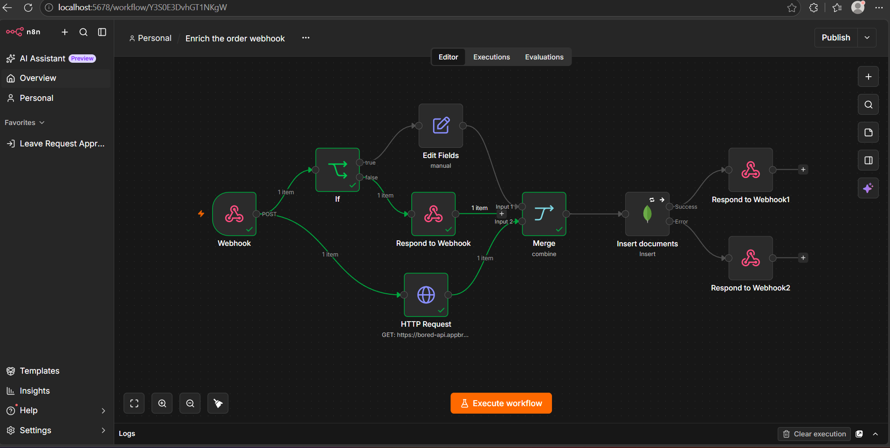
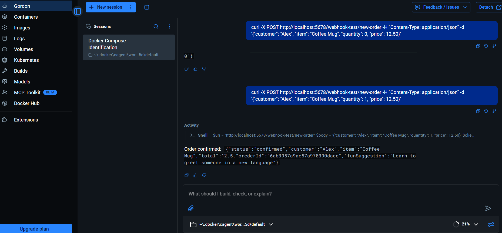
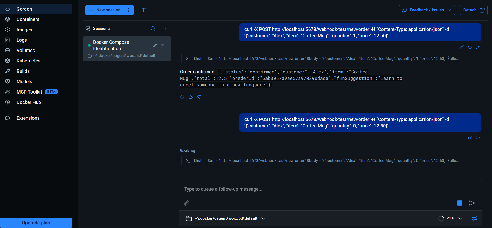
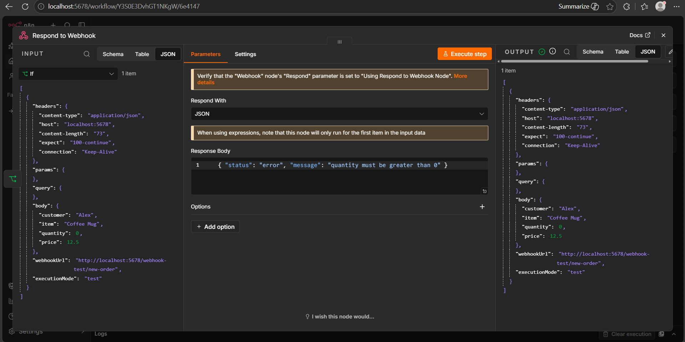
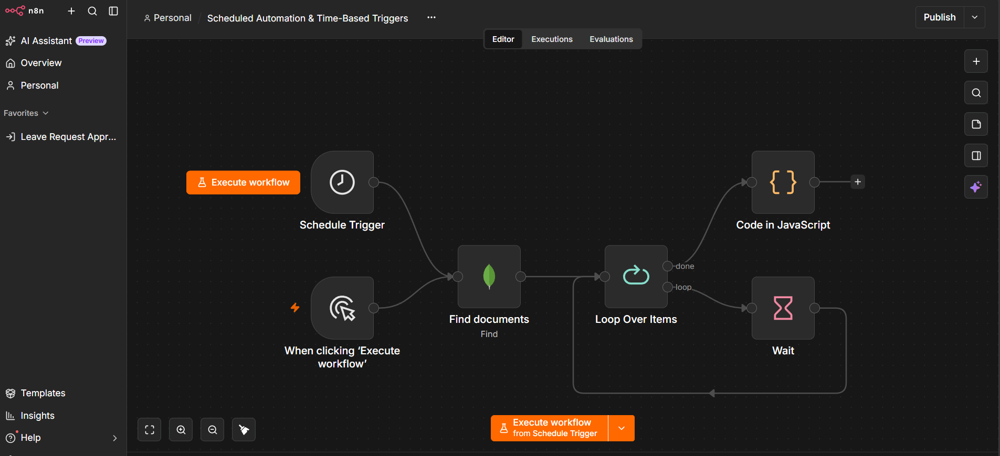
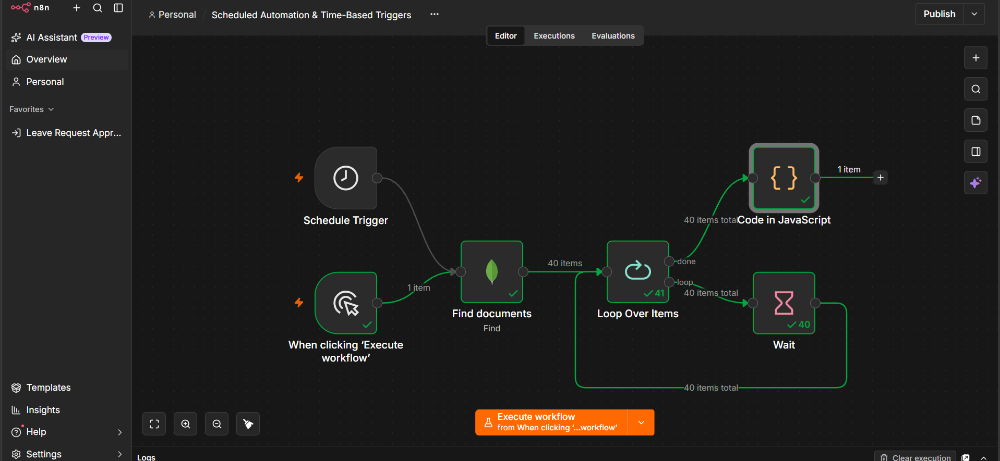
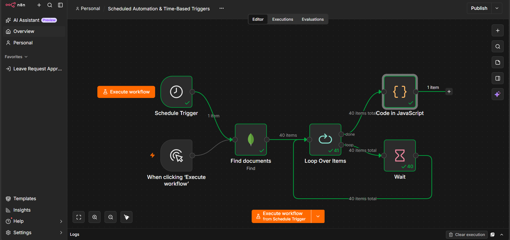
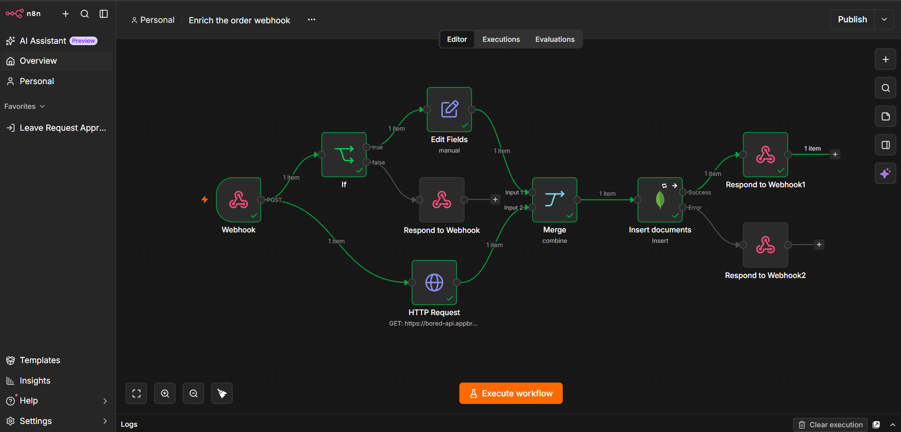
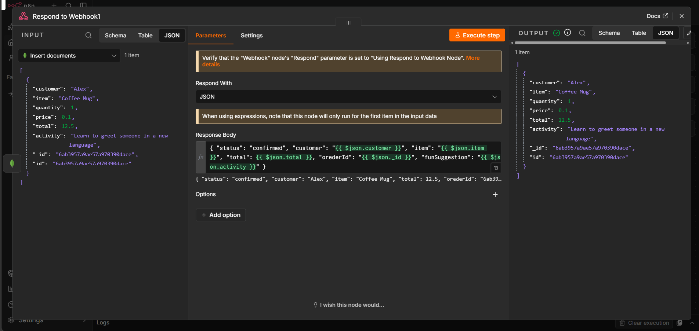
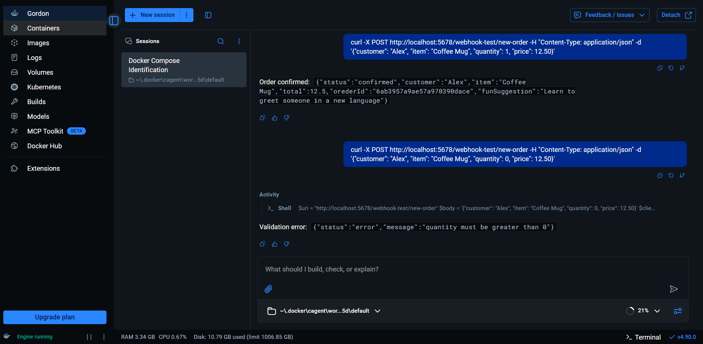

01 / PROBLEM
An order from intake to response.
An order workflow needs to do more than receive a webhook. It needs to validate the incoming request, prepare the data, enrich it when required, store the result and return a useful response. The reporting side also needs a controlled way to process stored orders on a schedule.
02 / WHY I BUILT IT
How one order travels the workflow.
I built this project to practice the complete path from an incoming webhook to validated, enriched, stored data, then add a separate scheduled process for stored orders.
02 / SOLUTION
Intake and reporting as separate paths.
The project separates the order-processing system into two workflow concerns: a webhook-driven order intake path and a scheduled reporting path. The first handles incoming orders and persistence; the second retrieves stored orders and processes them in a controlled batch.
| Component | What I built | Evidence |
|---|---|---|
| Webhook intake | Event-driven entry point for incoming orders. | Workflow / test screens |
| Validation & preparation | Input checks and data preparation before enrichment. | Workflow screenshot |
| API enrichment | External API call with the response merged into order data. | Workflow screenshot |
| MongoDB | Persistence layer for processed order information. | Workflow evidence |
| Scheduled reporting | Stored-order retrieval and controlled batch processing. | Reporting screenshots |
03 / ARCHITECTURE
Give each stage a clear responsibility.
Receives the order request
Checks and shapes the input
Calls the external service
Persists the processed order
Returns the result
Implementation note: The saved project material also documents a scheduled reporting path using stored orders, controlled iteration and JavaScript aggregation.
04 / WORKFLOW
Two automation paths working together.
- Receive: the order enters through a webhook.
- Validate: required data is checked and prepared.
- Enrich: an external API is called and the returned data is merged into the workflow data.
- Persist: the order is stored in MongoDB.
- Respond: the workflow returns a response to the caller.
- Report: a scheduled path retrieves stored orders and processes them in a controlled batch.
The project material also includes external webhook testing and a captured response payload.
05 / TESTING
Verify the actual execution path.
The saved project material includes external webhook tests, the order-intake workflow, response/output screens and the scheduled reporting workflow. The gallery keeps those artifacts next to the narrative so a visitor can inspect the evidence behind the workflow claims.




Webhook test
External HTTP request used to trigger the workflow.
Response verification
Captured output associated with the intake path.
Scheduled path
Stored orders processed through the reporting workflow.
Controlled processing
Looping and delay logic keep batch processing explicit.
07 / CHALLENGES
The parts that shaped the workflow design.
Keeping the webhook path predictable
Each processing stage has a defined job so the request can move from input to response without mixing concerns.
Passing data between steps
Order data and enrichment results need to remain usable as the workflow moves from one node group to the next.
Separating real-time and scheduled work
Incoming orders and later reporting use different triggers and execution patterns.
Testing outside the editor
The saved project includes external webhook requests and response evidence, not only the workflow canvas.
08 / RESULT
What the system demonstrates.
09 / LESSONS LEARNED
What I learned while building it.
Clear responsibilities make workflows easier to debug. Separating validation, enrichment, persistence and response makes the execution path easier to inspect.
Event-driven and scheduled workflows solve different problems. One reacts to an incoming request; the other handles repeatable processing.
Testing should include the boundary. Sending a real webhook request and inspecting the response provides stronger evidence than only viewing the workflow canvas.
10 / EVIDENCE
Captured implementation evidence.
The screenshots below come from the saved project materials and are included directly in the portfolio. Click any image to open the viewer.





